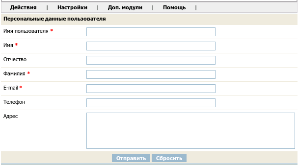
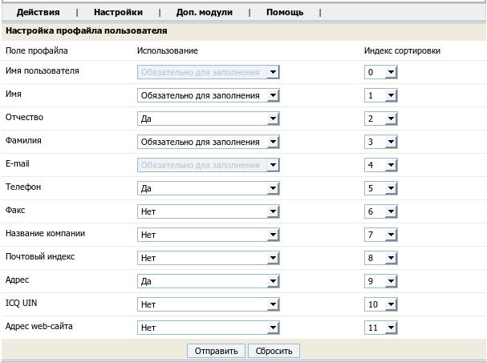
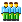

Название
Управление пользователями и группами — Разграничение доступа
О модуле
| Тип | Административный |
| Можно создать копий | Только одну |
| Присутствует по умолчанию | Да |
| Можно удалять | Нет |
Этот модуль позволяет создавать, изменять и удалять учетные записи пользователей и групп. Общие принципы контроля доступа к страницам сайта описаны в руководстве пользователя.
Вкладка Пользователи
→ →
В этом подразделе представлен список существующих пользователей с возможностью фильтрования по строке содержащейся в одном из полей профиля пользователя и по группе. Также можно выбрать поле по которому будет произведена сортировка и указать количество записей отображаемых на одной странице.
Общие действия
- →
- 
Завести новую учетную запись пользователя, заполнив персональные данные определенные в профайле пользователя.
- →
- 
Здесь можно указать какие реквизиты пользователь будет указывать при регистрации, а также какие из них будут обязательными. Реквизиты можно выбирать из следующего списка.
имя пользователя
имя
отчество
фамилия
e-mail
телефон
факс
название компании
почтовый индекс
адрес
ICQ UIN
адрес веб-сайта
Два поля всегда являются обязательными - это имя пользователя и E-mail. Также можно указать порядок отображения полей на странице, установив для каждого индекс сортировки.
Действия для существующего пользователя
Осуществляются нажатием на соответствующую иконку напротив имени пользователя.
 Редактировать
РедактироватьРедактировать профайл пользователя. Профайл пользователя - это набор реквизитов, которые он может (или должен, если реквизит помечен, как обязательный) заполнить при регистрации на сайте.
-  Группы
Выбрать группы, в которые входит пользователь.
- Пароль
Сменить пароль для пользователя.
 Удалить
УдалитьУдалить пользователя.
Вкладка Группы
→ →
Действия для существующей группы
- Редактировать
Изменить название группы.
- Права доступа
Здесь можно указать какие права доступа на каждую из страниц имеют члены данной группы. Права могут быть неопределены, тогда они определяются правами по умолчанию для данной страницы в ее основных параметрах
- Исключить пользователей из группы
Исключить всех пользователей из данной группы. Если для какого-нибудь пользователя эта группа была единственной, куда он входил, то он оказывается не включенным ни в одну группу и его права доступа определяются правами доступа для страницы по умолчанию, заданными в основных параметрах страницы в разделе управления навигацией.
- Удалить
Удалить группу. Разрешается удалять только группы в которые не входит ни один пользователь.